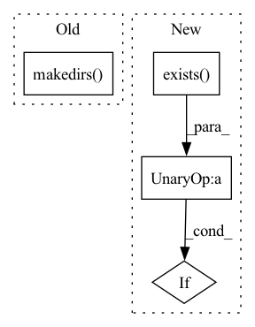

Pattern ID :10870
Before Change
file_name = (os.path.basename(video).split(".mp4"))[0]
try:
if not os.path.exists(save_dir + file_name):
os.makedirs( save_dir + file_name)
except OSError:
print("Error: Creating directory of data")
// Setting the frame limit to 100After Change
// os.makedirs(save_dir + file_name)
save_path = Path(save_dir).joinpath(file_name)
if not save_path.exists() :
save_path.mkdir()
except OSError:
print("Error: Creating directory of data")In pattern: SUPERPATTERN
Frequency: 4
Non-data size: 4
Instances Fragment ID: 37470379
Project Name: liaorongfan/deeppersonality
Commit Name: fc0e0a8ca8ebd7ce3ad206c1265dc8e586819def
Time: 2022-03-06
Author: 15670381505@163.com
File Name: dpcv/data/utils/video_to_image.py
M Class Name: AnonimousClass
N Class Name: AnonimousClass
M Method Name: frame_sample(2)
N Method Name: frame_sample(2)
M Parent Class:
N Parent Class:
M File Name: dpcv/data/utils/video_to_image.py
N File Name: dpcv/data/utils/video_to_image.py
M Start Line: 21
M End Line: 25
N Start Line: 23
N End Line: 31
Before Change
self.args = parser.parse_args(
["--upscale", "2", "--test_path", "cog_temp", "--save_root", "results"]
)
os.makedirs( self.args.test_path, exist_ok=True)
// background upsampler
if self.args.bg_upsampler == "realesrgan":
if not torch.cuda.is_available(): // CPU
After Change
if not os.path.exists("realesr-general-x4v3.pth"):
os.system(
"wget https://github.com/xinntao/Real-ESRGAN/releases/download/v0.2.5.0/realesr-general-x4v3.pth -P .")
if not os.path.exists("GFPGANv1.2.pth") :
os.system("wget https://github.com/TencentARC/GFPGAN/releases/download/v1.3.0/GFPGANv1.2.pth -P .")
if not os.path.exists("GFPGANv1.3.pth"):
os.system("wget https://github.com/TencentARC/GFPGAN/releases/download/v1.3.0/GFPGANv1.3.pth -P .") Fragment ID: 37470377
Project Name: tencentarc/gfpgan
Commit Name: 3e27784b1b4eb008d06c04dbbaf6bdde34c4da84
Time: 2022-08-31
Author: wxt1994@126.com
File Name: predict.py
M Class Name: Predictor
N Class Name: Predictor
M Method Name: setup(1)
N Method Name: setup(1)
M Parent Class: BasePredictor
N Parent Class: cog.Predictor
M File Name: predict.py
N File Name: predict.py
M Start Line: 23
M End Line: 77
N Start Line: 27
N End Line: 45
Before Change
model_path="GFPGANv1.3.pth", upscale=2, arch="clean", channel_multiplier=2, bg_upsampler=upsampler)
self.face_enhancer_v2 = GFPGANer(
model_path="GFPGANv1.2.pth", upscale=2, arch="clean", channel_multiplier=2, bg_upsampler=upsampler)
os.makedirs( "output", exist_ok=True)
def predict(
self,
img: Path = Input(description="Input"),After Change
if not os.path.exists("gfpgan/weights/GFPGANv1.3.pth"):
os.system(
"wget https://github.com/TencentARC/GFPGAN/releases/download/v1.3.0/GFPGANv1.3.pth -P ./gfpgan/weights")
if not os.path.exists("gfpgan/weights/GFPGANv1.4.pth") :
os.system(
"wget https://github.com/TencentARC/GFPGAN/releases/download/v1.3.0/GFPGANv1.4.pth -P ./gfpgan/weights")
Fragment ID: 37470380
Project Name: tencentarc/gfpgan
Commit Name: 7272e458874cb9a3b1b68c38a7136b2b8dd71f69
Time: 2022-09-04
Author: wxt1994@126.com
File Name: predict.py
M Class Name: Predictor
N Class Name: Predictor
M Method Name: setup(1)
N Method Name: setup(1)
M Parent Class: BasePredictor
N Parent Class: BasePredictor
M File Name: predict.py
N File Name: predict.py
M Start Line: 37
M End Line: 46
N Start Line: 42
N End Line: 60
Before Change
def global_local_config():
target = os.path.join(test_data_dir, "ckpoint")
if not os.path.exists(target):
os.makedirs( target)
config = LocalConfig(checkpoint_dir=target, input_data=test_data_dir / "data" / "smol.txt")
annotate_training_data(config)
yield config
shutil.rmtree(target)After Change
def global_local_config():
target = test_data_dir / "ckpoint"
input_data = test_data_dir / "data" / "smol.txt"
if not target.exists() :
target.mkdir()
config = LocalConfig(checkpoint_dir=target, input_data=input_data)
annotate_training_data(config) Fragment ID: 37470374
Project Name: gretelai/gretel-synthetics
Commit Name: 8af17403dfa595b5dceb08e387dcaf2d80b92f29
Time: 2020-03-23
Author: zredlined@users.noreply.github.com
File Name: tests/conftest.py
M Class Name: AnonimousClass
N Class Name: AnonimousClass
M Method Name: global_local_config(0)
N Method Name: global_local_config(0)
M Parent Class:
N Parent Class:
M File Name: tests/conftest.py
N File Name: tests/conftest.py
M Start Line: 15
M End Line: 18
N Start Line: 13
N End Line: 17